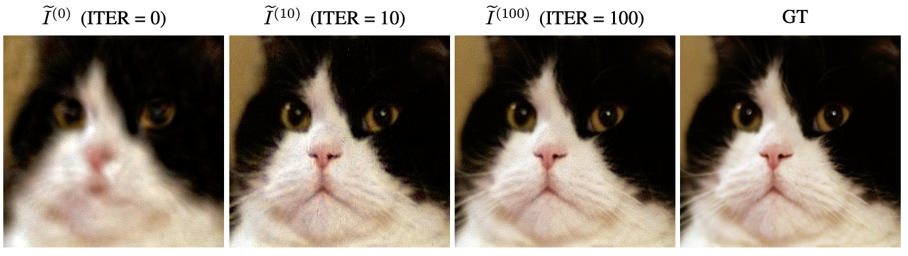

Fast convergence speed on Cats dataset. Our method achieves perceptually significant improvements within the first 100 iterations. The rapid visual convergence demonstrates the effectiveness of our PCA-based initialization, particularly on well-aligned datasets with moderate resolution. Additionally, our result also indicates that traditional PCA reconstruction, which is basically similar to our result at iteration zero, can be further improved by our approach.